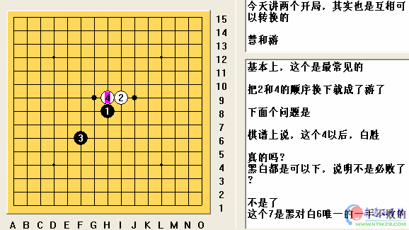

慧游开局讲座
首页
定式及研究
#1 慧游开局讲座 作者：有志青年 发表时间：2006-8-29 12:53:30

[hf]
 慧游.rar
慧游.rar
[/hf]
#2 Re:慧游开局讲座 作者：潇洒 发表时间：2006-8-30 21:34:57
看看
#3 Re:慧游开局讲座 作者：longfx 发表时间：2006-8-31 14:08:05
用RenjuSlover把课件改格式的?
#4 Re:慧游开局讲座 作者：听雨练棋 发表时间：2006-9-11 14:08:27
学习一下
#5 Re:慧游开局讲座 作者：酒鬼 发表时间：2006-9-11 18:19:14
学棋
#6 Re:慧游开局讲座 作者：酒鬼 发表时间：2006-10-28 7:35:54
学棋
#7 Re:慧游开局讲座 作者：noriko 发表时间：2006-11-23 16:50:44
好
#8 Re:慧游开局讲座 作者：lfc80 发表时间：2006-11-23 21:07:34
学习一下
#9 Re:慧游开局讲座 作者：news 发表时间：2006-11-29 13:10:51
看一下。这个开局不太熟
#10 Re:慧游开局讲座 作者：华仔 发表时间：2007-1-3 23:51:37
交流一下
#11 Re:慧游开局讲座 作者：catman 发表时间：2007-1-16 19:48:37
看看~~
#12 Re:慧游开局讲座 作者：连珠战神 发表时间：2007-2-3 16:24:32
看看
#13 Re:慧游开局讲座 作者：吕文鹏 发表时间：2008-7-12 0:26:45
这个经典，讲的很透彻，无论黑怎么下，白都有唯一防，希望多看到游星的研究，谢谢
#14 Re:慧游开局讲座 作者：叵 发表时间：2008-7-15 16:33:55
嗯...下载了
#15 Re:慧游开局讲座 作者：张晓亮 发表时间：2008-7-31 16:37:40
学习学习~xiexie
#16 Re:慧游开局讲座 作者：张晓亮 发表时间：2008-7-31 16:38:02
学习学习，谢谢分享！